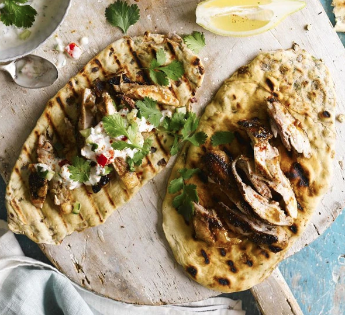

Grilled flaky naans

Description
This basic naan dough is filled with ajwain seeds, onion and coriander and quickly cooked on a griddle pan or barbecue to add a smoky finish
By not Rachel
Ingredients
For the naans
- 300g plain flour
- 1 tsp sugar
- ½ tsp bicarbonate of soda
- 3 tbsp plain yogurt
- 1 egg , beaten
- vegetable oil , for greasing and layering
- knob of butter , to serve
For the filling
- 1 tbsp ajwain seeds (see tip)
- 1 small red onion , finely chopped
- large handful coriander , chopped
- ¼ tsp red chilli powder (optional)
Steps
- Mix together the flour, sugar, bicarb and 1 tsp salt, then add the yogurt, egg and 100ml water, and bring together – the dough should be quite wet. Knead the dough for 10 mins until it is soft and smooth. If the dough is dry, add 1 tbsp water and knead again.
- Shape the dough into a ball, smear with oil and put in a clean mixing bowl. Cover with a tea towel and plate, and leave to rest for 1-2 hrs.
- Mix the filling ingredients in a bowl with 1 tsp salt. Divide the dough into 6 balls, then roll out 1 ball as thin as you can. Smear over 1 tsp oil and sprinkle over some of the filling. Roll up like a Swiss roll, then gently pull the ends to stretch it into a long cylinder. Coil the dough into a snail shape. Cover with a damp tea towel and repeat with the remaining dough.
- Heat a griddle pan to hot, or fire up the barbecue and oil the racks. Roll each bread into a teardrop shape. (I roll mine quite thin – don’t worry about a tear here and there.) Cook for 1-2 mins on each side until you have dark char marks and the bread is slightly puffed up and cooked through. You can cook as many as you can get on your griddle or BBQ at the same time. Take off the heat, smear over some butter and serve hot.